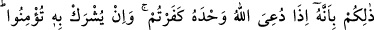
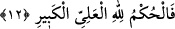
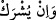
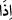
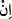

itiraf ettiklerinin arasına koymamaktadırlar. Zannetmektedirler ki bu itirafın kendilerine
bir yararı olacak. Peki ilk ölümü niçin zikrediyorlar? Zikrediyorlar, çünkü ölüm; varlık
sahnesine çıkışı açısından ikisi üzerine sıralanması hasebiyle ifadelerinde de ikisi
üzerine sıralanıyor.
4- İki kez diriltiş ve iki kez öldürüşle ilgili bir görüş de et-Te’vîlâtü’n-Necmiyye’de
geçen şu görüştür: Cehennemlikler, kalplerin öldürülüp nefislerin diriltilişini, sonra da
bedenlerin öldürülüp baasla tekrar diriltilişini kastediyorlar.
12. (Onlara denir ki:) İşte bunun sebebi şudur: Tek Allah’a ibadete çağrıldığı
zaman inkâr edersiniz. O’na ortak koşulunca (bunu) tasdik edersiniz. Artık
hüküm, yücelerin yücesi Allah’ındır.
(Onlara denir ki:) “İşte bunun sebebi...”
İrşad’da der ki: “İşte bunun sebebi...” ifâdesi, ümid ettikleri şeyin gerçekleşmesinin
bizzat kendi kötü amelleri yüzünden imkansız olduğunu gösteren bir cevaptır. Yani, işte
içinde bulunduğunuz bu berbat azap, şu sebeptendir: Dünyada iken yalnız, tek başına
olarak Allah çağrıldığı, sadece O’na kulluk edildiği zaman O’nun birliğini inkâr
ediyordunuz. O’na eş koşulunca ise şirk koşmak suretiyle hemen inanıyor, tasdik edip
şirkli bir îmana koşuyordunuz.
Burada mâzî yerine “__WORD__ şeklinde fiil-i muzâri kulanılmasının sebebi, dünyaya
tekrar gönderilmeleri durumunda yine şirklerine döneceklerine dikkat çekmek içindir.
İrşad’da der ki: Âyet-i kerimede ilk şart cümlesinde “__WORD__” edatının getirilmesi ve “fiil-
i mâzi” sigası kullanılması; ikinci şart cümlesinde ise “__WORD__” edatının getirilmesi ve “fiil-i
muzâri” sigası kullanılmasında, kâfirlerin durumlarının son derece kötü olduğuna dâir
âşikâr bir delâlet vardır.
Vaziyetiniz böyle olduğuna göre, (bugün) hüküm, hak dışında hiçbir hüküm vermeyen,
kendisine ortak koşulamayacak kadar Yüce ve Büyük olan Allah’ındır. “Kendisine ortak
koşulamayacak kadar” diyoruz, çünkü zâtında, sıfatlarında ve fillerinde hiçbir varlık
O’na benzemez. Hem O kendisine ortak tanıyanları asla affetmeyeceğine, böylelerine
verilecek cezânın sonsuz olduğuna dâir kesin karar vermiştir. Öyleyse ebediyen buradan
çıkmanız mümkün değildir.
Denildiğine göre Harûrîler: “Hüküm ancak Allah’a aittir” sloganlarını bu ayetten
çıkarmışlardır. Yine dendiğine göre, Hâricîlere Harûrî denmesinin sebebi bunların
Harûrâ’da -ki Halûlâ veznindedir- ortaya çıkıp ilk olarak burada toplanmış
olmalarındandır. Burası, kısaca, “Kufe’de bir kasaba” olarak anılır.